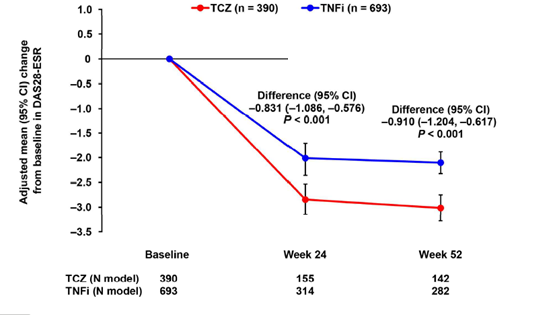
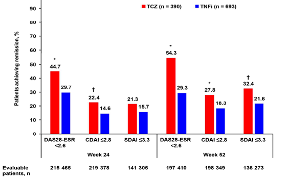

1st-BioのACTとTNFの前向き比較では、ACTで有意に良好な成績であった（ACTiON Study）
【目的】
csDMARDs効果不十分なRA患者へのトシリズマブ(TCZ-IV)もしくはTNF阻害薬（TNFi）の臨床的有効性を比較する
（TNFiの内訳：ETN39.7％、ADA25.6％、CER19.5％、IFX8.2％、GOL6.9％）
【方法】
26ヵ国158施設において、日常臨床でTCZもしくはTNFiが使用された患者をプロスペクティブに52週間観察した
主要評価項目：24週時のDAS28-ESR変化量の差

24週時、52週時のDAS28-ESR、CDAI、SDAI寛解率

1st-BIOとして前向きにDAS28-ESR及びCDAIで観察比較した初めての実臨床でのエビデンスで、ACTはTNFよりも有意に高い成績を収めた（PSマッチング後も有意に高い）→1st-Bioならアクテムラ
E Choy,et al; Arthritis Care Res (Hoboken).2017 Jun 16. doi: 10.1002/acr.23303.